Tecnicatura Superior en Psicomotricidad
1El psicomotricista tiene una tarea preventiva tendiente a evitar la aparición de dificultades psicomotrices.
2Promueve mejoras en la adquisición de lecto escritura en el desempeño a nivel cognitivo y social.
3Aborda temprana y oportunamente dificultades psicomotrices para ayudar en el desarrollo madurativo del niño desde el nacimiento hasta su desarrollo puberal.
Materias de primer año
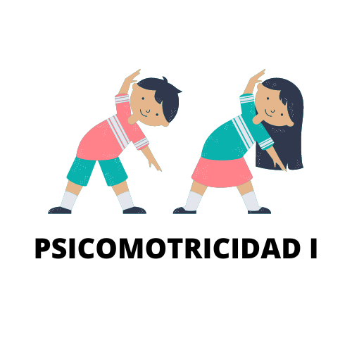
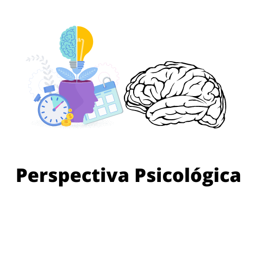
 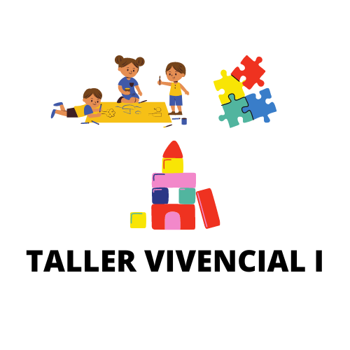
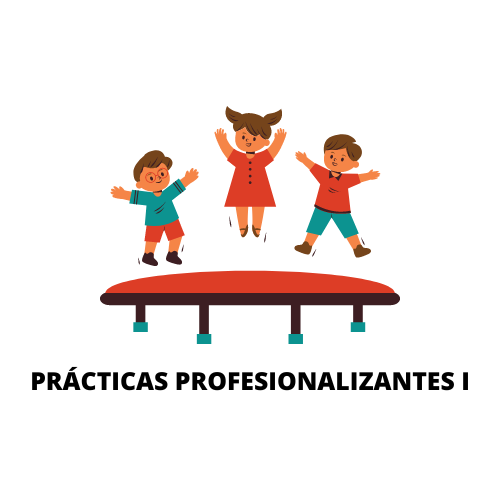
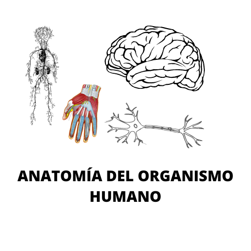
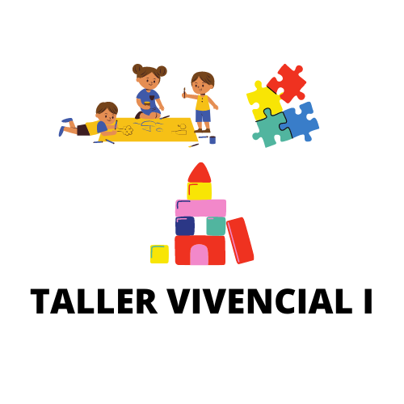
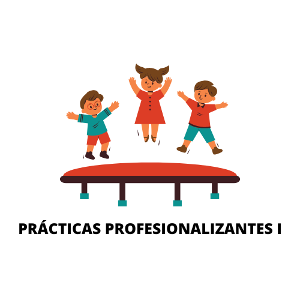
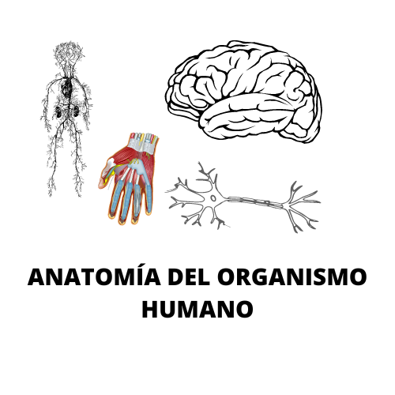
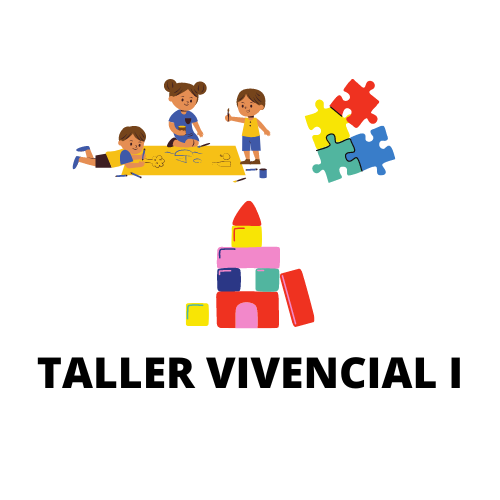
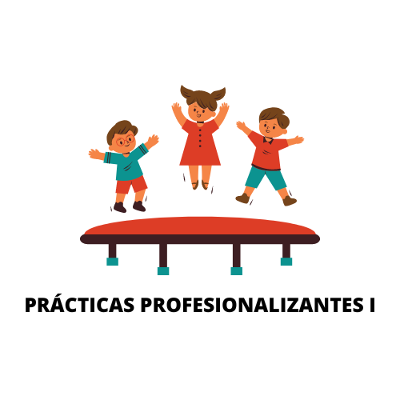
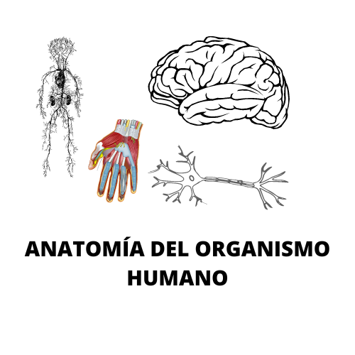